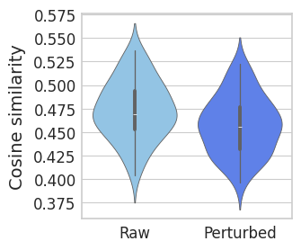

Run simple simulation via perturb nr2f5 targets#
Library imports#
import numpy as np
import pandas as pd
import scipy
import torch
import matplotlib.pyplot as plt
import mplscience
import seaborn as sns
import anndata as ad
import cellrank as cr
import scanpy as sc
import scvi
from regvelo import REGVELOVI
from rgv_tools import DATA_DIR, FIG_DIR
from rgv_tools.benchmarking import set_output
from rgv_tools.perturbation import in_silico_block_simulation
/home/icb/weixu.wang/miniconda3/envs/regvelo-py310/lib/python3.10/site-packages/anndata/utils.py:434: FutureWarning: Importing read_csv from `anndata` is deprecated. Import anndata.io.read_csv instead.
warnings.warn(msg, FutureWarning)
/home/icb/weixu.wang/miniconda3/envs/regvelo-py310/lib/python3.10/site-packages/anndata/utils.py:434: FutureWarning: Importing read_excel from `anndata` is deprecated. Import anndata.io.read_excel instead.
warnings.warn(msg, FutureWarning)
/home/icb/weixu.wang/miniconda3/envs/regvelo-py310/lib/python3.10/site-packages/anndata/utils.py:434: FutureWarning: Importing read_hdf from `anndata` is deprecated. Import anndata.io.read_hdf instead.
warnings.warn(msg, FutureWarning)
/home/icb/weixu.wang/miniconda3/envs/regvelo-py310/lib/python3.10/site-packages/anndata/utils.py:434: FutureWarning: Importing read_loom from `anndata` is deprecated. Import anndata.io.read_loom instead.
warnings.warn(msg, FutureWarning)
/home/icb/weixu.wang/miniconda3/envs/regvelo-py310/lib/python3.10/site-packages/anndata/utils.py:434: FutureWarning: Importing read_mtx from `anndata` is deprecated. Import anndata.io.read_mtx instead.
warnings.warn(msg, FutureWarning)
/home/icb/weixu.wang/miniconda3/envs/regvelo-py310/lib/python3.10/site-packages/anndata/utils.py:434: FutureWarning: Importing read_text from `anndata` is deprecated. Import anndata.io.read_text instead.
warnings.warn(msg, FutureWarning)
/home/icb/weixu.wang/miniconda3/envs/regvelo-py310/lib/python3.10/site-packages/anndata/utils.py:434: FutureWarning: Importing read_umi_tools from `anndata` is deprecated. Import anndata.io.read_umi_tools instead.
warnings.warn(msg, FutureWarning)
/home/icb/weixu.wang/miniconda3/envs/regvelo-py310/lib/python3.10/site-packages/louvain/__init__.py:54: UserWarning: pkg_resources is deprecated as an API. See https://setuptools.pypa.io/en/latest/pkg_resources.html. The pkg_resources package is slated for removal as early as 2025-11-30. Refrain from using this package or pin to Setuptools<81.
from pkg_resources import get_distribution, DistributionNotFound
General settings#
%matplotlib inline
scvi.settings.seed = 0
[rank: 0] Seed set to 0
Constants#
DATASET = "zebrafish"
SAVE_DATA = True
if SAVE_DATA:
(DATA_DIR / DATASET / "processed").mkdir(parents=True, exist_ok=True)
(DATA_DIR / DATASET / "results").mkdir(parents=True, exist_ok=True)
SAVE_FIGURES = False
if SAVE_FIGURES:
(FIG_DIR / DATASET).mkdir(parents=True, exist_ok=True)
genes = ["nr2f5", "sox9b", "twist1b", "ets1"]
TERMINAL_STATES = [
"mNC_head_mesenchymal",
"mNC_arch2",
"mNC_hox34",
"Pigment",
]
MODEL = DATA_DIR / DATASET / "processed" / "rgv_model"
Define functions#
def cosine_similarity(vector_a, vector_b):
"""Calculate the cosine similarity between two vectors.
Args:
vector_a (np.array): First vector.
vector_b (np.array): Second vector.
Returns
-------
float: Cosine similarity between vector_a and vector_b.
"""
dot_product = np.dot(vector_a, vector_b)
norm_a = np.linalg.norm(vector_a)
norm_b = np.linalg.norm(vector_b)
return dot_product / (norm_a * norm_b)
Data loading#
adata = sc.read_h5ad(DATA_DIR / DATASET / "processed" / "adata_preprocessed.h5ad")
Load model#
# Prepare skeleton
W = adata.uns["skeleton"].copy()
W = torch.tensor(np.array(W)).int()
# Prepare TF
TF = adata.var_names[adata.var["TF"]]
# Prepare model
REGVELOVI.setup_anndata(adata, spliced_layer="Ms", unspliced_layer="Mu")
vae = REGVELOVI(adata, W=W.T, regulators=TF, soft_constraint=False)
vae.train()
GPU available: True (cuda), used: True
TPU available: False, using: 0 TPU cores
HPU available: False, using: 0 HPUs
LOCAL_RANK: 0 - CUDA_VISIBLE_DEVICES: [0]
Monitored metric elbo_validation did not improve in the last 45 records. Best score: -2359.505. Signaling Trainer to stop.
vae.save(MODEL)
vae = REGVELOVI.load(MODEL, adata)
INFO File
/lustre/groups/ml01/workspace/weixu.wang/regvelo_revision/GRN_trajectory_benchmark/data/zebrafish_regulon_
traj/processed/rgv_model/model.pt already downloaded
set_output(adata, vae, n_samples=30, batch_size=adata.n_obs)
TERMINAL_STATES = ["mNC_head_mesenchymal", "mNC_arch2", "mNC_hox34", "Pigment"]
vk = cr.kernels.VelocityKernel(adata).compute_transition_matrix()
ck = cr.kernels.ConnectivityKernel(adata).compute_transition_matrix()
estimator = cr.estimators.GPCCA(vk)
## evaluate the fate prob on original space
estimator.compute_macrostates(n_states=7, cluster_key="cell_type")
estimator.set_terminal_states(TERMINAL_STATES)
estimator.compute_fate_probabilities()
estimator.plot_fate_probabilities(same_plot=False)
2025-10-25 21:33:19,025 - INFO - Using pre-computed Schur decomposition
[0]PETSC ERROR: ------------------------------------------------------------------------
[0]PETSC ERROR: Caught signal number 13 Broken Pipe: Likely while reading or writing to a socket
[0]PETSC ERROR: Try option -start_in_debugger or -on_error_attach_debugger
[0]PETSC ERROR: or see https://petsc.org/release/faq/#valgrind and https://petsc.org/release/faq/
[0]PETSC ERROR: configure using --with-debugging=yes, recompile, link, and run
[0]PETSC ERROR: to get more information on the crash.
lineage_genes = estimator.compute_lineage_drivers(return_drivers=True, cluster_key="cell_type")
adata_perturb_dict = {}
reg_vae_perturb_dict = {}
cand_list = ["nr2f5", "ets1", "sox9b", "twist1b"]
for TF in cand_list:
adata_target_perturb, reg_vae_perturb = in_silico_block_simulation(model=MODEL, adata=adata, gene=TF, cutoff=0)
adata_perturb_dict[TF] = adata_target_perturb
reg_vae_perturb_dict[TF] = reg_vae_perturb
INFO File
/lustre/groups/ml01/workspace/weixu.wang/regvelo_revision/GRN_trajectory_benchmark/data/zebrafish_regulon_
traj/processed/rgv_model/model.pt already downloaded
INFO File
/lustre/groups/ml01/workspace/weixu.wang/regvelo_revision/GRN_trajectory_benchmark/data/zebrafish_regulon_
traj/processed/rgv_model/model.pt already downloaded
INFO File
/lustre/groups/ml01/workspace/weixu.wang/regvelo_revision/GRN_trajectory_benchmark/data/zebrafish_regulon_
traj/processed/rgv_model/model.pt already downloaded
INFO File
/lustre/groups/ml01/workspace/weixu.wang/regvelo_revision/GRN_trajectory_benchmark/data/zebrafish_regulon_
traj/processed/rgv_model/model.pt already downloaded
ct_indices = {
ct: adata.obs["term_states_fwd"][adata.obs["term_states_fwd"] == ct].index.tolist() for ct in TERMINAL_STATES
}
# Computing states transition probability for perturbed systems
for TF, adata_target_perturb in adata_perturb_dict.items():
vkp = cr.kernels.VelocityKernel(adata_target_perturb).compute_transition_matrix()
ck = cr.kernels.ConnectivityKernel(adata_target_perturb).compute_transition_matrix()
estimator = cr.estimators.GPCCA(vkp)
estimator.set_terminal_states(ct_indices)
estimator.compute_fate_probabilities()
adata_perturb_dict[TF] = adata_target_perturb
[0]PETSC ERROR: ------------------------------------------------------------------------
[0]PETSC ERROR: Caught signal number 13 Broken Pipe: Likely while reading or writing to a socket
[0]PETSC ERROR: Try option -start_in_debugger or -on_error_attach_debugger
[0]PETSC ERROR: or see https://petsc.org/release/faq/#valgrind and https://petsc.org/release/faq/
[0]PETSC ERROR: configure using --with-debugging=yes, recompile, link, and run
[0]PETSC ERROR: to get more information on the crash.
[0]PETSC ERROR: ------------------------------------------------------------------------
[0]PETSC ERROR: Caught signal number 13 Broken Pipe: Likely while reading or writing to a socket
[0]PETSC ERROR: Try option -start_in_debugger or -on_error_attach_debugger
[0]PETSC ERROR: or see https://petsc.org/release/faq/#valgrind and https://petsc.org/release/faq/
[0]PETSC ERROR: configure using --with-debugging=yes, recompile, link, and run
[0]PETSC ERROR: to get more information on the crash.
[0]PETSC ERROR: ------------------------------------------------------------------------
[0]PETSC ERROR: Caught signal number 13 Broken Pipe: Likely while reading or writing to a socket
[0]PETSC ERROR: Try option -start_in_debugger or -on_error_attach_debugger
[0]PETSC ERROR: or see https://petsc.org/release/faq/#valgrind and https://petsc.org/release/faq/
[0]PETSC ERROR: configure using --with-debugging=yes, recompile, link, and run
[0]PETSC ERROR: to get more information on the crash.
Abort(59) on node 0 (rank 0 in comm 0): application called MPI_Abort(MPI_COMM_WORLD, 59) - process 0
[0]PETSC ERROR: ------------------------------------------------------------------------
[0]PETSC ERROR: Caught signal number 13 Broken Pipe: Likely while reading or writing to a socket
[0]PETSC ERROR: Try option -start_in_debugger or -on_error_attach_debugger
[0]PETSC ERROR: or see https://petsc.org/release/faq/#valgrind and https://petsc.org/release/faq/
[0]PETSC ERROR: configure using --with-debugging=yes, recompile, link, and run
[0]PETSC ERROR: to get more information on the crash.
Abort(59) on node 0 (rank 0 in comm 0): application called MPI_Abort(MPI_COMM_WORLD, 59) - process 0
[0]PETSC ERROR: ------------------------------------------------------------------------
[0]PETSC ERROR: Caught signal number 13 Broken Pipe: Likely while reading or writing to a socket
[0]PETSC ERROR: Try option -start_in_debugger or -on_error_attach_debugger
[0]PETSC ERROR: or see https://petsc.org/release/faq/#valgrind and https://petsc.org/release/faq/
[0]PETSC ERROR: configure using --with-debugging=yes, recompile, link, and run
[0]PETSC ERROR: to get more information on the crash.
Abort(59) on node 0 (rank 0 in comm 0): application called MPI_Abort(MPI_COMM_WORLD, 59) - process 0
[0]PETSC ERROR: ------------------------------------------------------------------------
[0]PETSC ERROR: Caught signal number 13 Broken Pipe: Likely while reading or writing to a socket
[0]PETSC ERROR: Try option -start_in_debugger or -on_error_attach_debugger
[0]PETSC ERROR: or see https://petsc.org/release/faq/#valgrind and https://petsc.org/release/faq/
[0]PETSC ERROR: configure using --with-debugging=yes, recompile, link, and run
[0]PETSC ERROR: to get more information on the crash.
Abort(59) on node 0 (rank 0 in comm 0): application called MPI_Abort(MPI_COMM_WORLD, 59) - process 0
[0]PETSC ERROR: ------------------------------------------------------------------------
[0]PETSC ERROR: Caught signal number 13 Broken Pipe: Likely while reading or writing to a socket
[0]PETSC ERROR: Try option -start_in_debugger or -on_error_attach_debugger
[0]PETSC ERROR: or see https://petsc.org/release/faq/#valgrind and https://petsc.org/release/faq/
[0]PETSC ERROR: configure using --with-debugging=yes, recompile, link, and run
[0]PETSC ERROR: to get more information on the crash.
Abort(59) on node 0 (rank 0 in comm 0): application called MPI_Abort(MPI_COMM_WORLD, 59) - process 0
[0]PETSC ERROR: ------------------------------------------------------------------------
[0]PETSC ERROR: Caught signal number 13 Broken Pipe: Likely while reading or writing to a socket
[0]PETSC ERROR: Try option -start_in_debugger or -on_error_attach_debugger
[0]PETSC ERROR: or see https://petsc.org/release/faq/#valgrind and https://petsc.org/release/faq/
[0]PETSC ERROR: configure using --with-debugging=yes, recompile, link, and run
[0]PETSC ERROR: to get more information on the crash.
Abort(59) on node 0 (rank 0 in comm 0): application called MPI_Abort(MPI_COMM_WORLD, 59) - process 0
[0]PETSC ERROR: ------------------------------------------------------------------------
[0]PETSC ERROR: Caught signal number 13 Broken Pipe: Likely while reading or writing to a socket
[0]PETSC ERROR: Try option -start_in_debugger or -on_error_attach_debugger
[0]PETSC ERROR: or see https://petsc.org/release/faq/#valgrind and https://petsc.org/release/faq/
[0]PETSC ERROR: configure using --with-debugging=yes, recompile, link, and run
[0]PETSC ERROR: to get more information on the crash.
Abort(59) on node 0 (rank 0 in comm 0): application called MPI_Abort(MPI_COMM_WORLD, 59) - process 0
[0]PETSC ERROR: ------------------------------------------------------------------------
[0]PETSC ERROR: Caught signal number 13 Broken Pipe: Likely while reading or writing to a socket
[0]PETSC ERROR: Try option -start_in_debugger or -on_error_attach_debugger
[0]PETSC ERROR: or see https://petsc.org/release/faq/#valgrind and https://petsc.org/release/faq/
[0]PETSC ERROR: configure using --with-debugging=yes, recompile, link, and run
[0]PETSC ERROR: to get more information on the crash.
Abort(59) on node 0 (rank 0 in comm 0): application called MPI_Abort(MPI_COMM_WORLD, 59) - process 0
[0]PETSC ERROR: ------------------------------------------------------------------------
[0]PETSC ERROR: Caught signal number 13 Broken Pipe: Likely while reading or writing to a socket
[0]PETSC ERROR: Try option -start_in_debugger or -on_error_attach_debugger
[0]PETSC ERROR: or see https://petsc.org/release/faq/#valgrind and https://petsc.org/release/faq/
[0]PETSC ERROR: configure using --with-debugging=yes, recompile, link, and run
[0]PETSC ERROR: to get more information on the crash.
Abort(59) on node 0 (rank 0 in comm 0): application called MPI_Abort(MPI_COMM_WORLD, 59) - process 0
[0]PETSC ERROR: ------------------------------------------------------------------------
[0]PETSC ERROR: Caught signal number 13 Broken Pipe: Likely while reading or writing to a socket
[0]PETSC ERROR: Try option -start_in_debugger or -on_error_attach_debugger
[0]PETSC ERROR: or see https://petsc.org/release/faq/#valgrind and https://petsc.org/release/faq/
[0]PETSC ERROR: configure using --with-debugging=yes, recompile, link, and run
[0]PETSC ERROR: to get more information on the crash.
Abort(59) on node 0 (rank 0 in comm 0): application called MPI_Abort(MPI_COMM_WORLD, 59) - process 0
Select top-20 targets#
W = pd.DataFrame(vae.module.v_encoder.fc1.weight.data.cpu().numpy(), index=adata.var_names, columns=adata.var_names)
targets = W.sort_values(by="nr2f5", ascending=False).loc[:, "nr2f5"]
targets = targets[:20].index
targets
Index(['kalrnb', 'lmo4b', 'zfhx4', 'hsp70.3', 'serpinh1b', 'afap1l1b',
'zgc:153867', 'pdlim1', 'cyth1b', 'sept12', 'hsp70.2', 'tuba1a',
'alcama', 'parp12b', 'adgrl1a', 'emc2', 'col4a6', 'ptprub', 'lsp1a',
'slbp'],
dtype='object', name='Gene')
Both serpinh1b and alcama genes are known functional related to skeleton development, in which closely relate to facial mesenchymal
alcama: https://pmc.ncbi.nlm.nih.gov/articles/PMC3036164/ serpinh1b: https://www.sciencedirect.com/science/article/pii/S0925477315000489?utm_source=chatgpt.com
Wp_p = W.copy()
for g in ["alcama", "serpinh1b"]:
Wp_p.loc[g, "nr2f5"] = 0
reg_vae_perturb_dict["nr2f5"].module.v_encoder.fc1.weight.data = torch.tensor(np.array(Wp_p), device="cuda:0")
set_output(adata_perturb_dict["nr2f5"], reg_vae_perturb_dict["nr2f5"], n_samples=30, batch_size=adata.n_obs)
Run ODE simulation#
adata_perturb_dict["nr2f5"].layers["fit_s"], adata_perturb_dict["nr2f5"].layers["fit_u"] = reg_vae_perturb_dict[
"nr2f5"
].rgv_expression_fit(n_samples=30)
adata.layers["fit_s"], adata.layers["fit_u"] = vae.rgv_expression_fit(n_samples=30)
Calculating similarity#
velo = adata_perturb_dict["nr2f5"][adata.obs_names[adata.obs["cell_type"] == "NPB_nohox"]].layers["velocity"]
gex = adata[adata.obs_names[adata.obs["cell_type"] == "NPB_nohox"]].layers["fit_s"]
gex = gex + velo
cor_pert = []
for i in range(47):
cor_pert.append(
cosine_similarity(
gex[i,], adata[adata.obs["term_states_fwd"] == "mNC_head_mesenchymal"].layers["fit_s"].mean(0)
)
)
velo = adata[adata.obs_names[adata.obs["cell_type"] == "NPB_nohox"]].layers["velocity"]
gex = adata[adata.obs_names[adata.obs["cell_type"] == "NPB_nohox"]].layers["Ms"]
gex = gex + velo
cor_raw = []
for i in range(47):
cor_raw.append(
cosine_similarity(
gex[i,], adata[adata.obs["term_states_fwd"] == "mNC_head_mesenchymal"].layers["fit_s"].mean(0)
)
)
df = pd.DataFrame(
{
"Cosine similarity": np.concatenate([cor_pert, cor_raw]),
"Type": ["Perturbed"] * len(cor_pert) + ["Raw"] * len(cor_raw),
}
)
with mplscience.style_context():
sns.set_style(style="whitegrid")
fig, ax = plt.subplots(figsize=(3, 3))
sns.violinplot(
data=df,
ax=ax,
# orient="h",
x="Type",
y="Cosine similarity",
hue="Type",
order=["Raw", "Perturbed"],
)
if SAVE_FIGURES:
fig.savefig(FIG_DIR / DATASET / "GEX_prediction.svg", format="svg", transparent=True, bbox_inches="tight")
plt.xlabel("")

scipy.stats.ttest_ind(cor_raw, cor_pert, alternative="greater")
TtestResult(statistic=2.5447425447525465, pvalue=0.006300639496181312, df=92.0)
Visualize the cell fate probability change after entire nr2f5 regulon depletion#
score = np.array(adata_perturb_dict["nr2f5"].obsm["lineages_fwd"]["mNC_head_mesenchymal"]).reshape(-1) - np.array(
adata.obsm["lineages_fwd"]["mNC_head_mesenchymal"]
).reshape(-1)
adata.obs["score"] = score
with mplscience.style_context():
fig, ax = plt.subplots(figsize=(4, 3))
sc.pl.umap(
adata=adata,
color="score",
title="",
cmap="vlag",
vcenter=0,
ax=ax,
vmax=0.075,
frameon=False,
legend_fontsize=14,
)
if SAVE_FIGURES:
fig.savefig(FIG_DIR / DATASET / "nr2f5_perturbation.svg", format="svg", transparent=True, bbox_inches="tight")
plt.show
Visualize trajectory#
wt = adata.copy()
nr2f5 = adata_perturb_dict["nr2f5"].copy()
gene = "serpinh1b"
X = np.zeros((adata.shape[0], 3))
X[:, 0] = wt[:, "nr2f5"].layers["Ms"].reshape(-1)
X[:, 1] = wt[:, gene].layers["fit_u"].reshape(-1)
X[:, 2] = nr2f5[:, gene].layers["fit_u"].reshape(-1)
var = pd.DataFrame(
{
"gene_name": ["nr2f5", gene, f"{gene}_pert"],
},
index=["nr2f5", gene, f"{gene}_pert"],
)
adata_plot = ad.AnnData(X=X, obs=adata.obs.copy(), var=var)
adata_plot.obsm = adata.obsm.copy()
adata_plot.uns = adata.uns.copy()
adata_plot.obsp = adata.obsp.copy()
adata_plot
AnnData object with n_obs × n_vars = 697 × 3
obs: 'initial_size_unspliced', 'initial_size_spliced', 'initial_size', 'n_counts', 'cell_type', 'stage', 'latent_time', 'macrostates_fwd', 'term_states_fwd', 'term_states_fwd_probs', 'score'
var: 'gene_name'
uns: '_scvi_manager_uuid', '_scvi_uuid', 'cell_type_colors', 'coarse_fwd', 'eigendecomposition_fwd', 'macrostates_fwd_colors', 'neighbors', 'network', 'regulators', 'schur_matrix_fwd', 'skeleton', 'targets', 'term_states_fwd_colors'
obsm: 'X_pca', 'X_umap', 'macrostates_fwd_memberships', 'schur_vectors_fwd', 'term_states_fwd_memberships', 'lineages_fwd'
obsp: 'connectivities', 'distances'
model = cr.models.GAMR(adata_plot, n_knots=10, smoothing_penalty=10.0)
2025-10-25 21:35:08,101 - INFO - cffi mode is CFFI_MODE.ANY
2025-10-25 21:35:08,107 - INFO - R home found: /usr/lib64/R
2025-10-25 21:35:08,384 - INFO - R library path: :/home/icb/weixu.wang/miniconda3/lib
2025-10-25 21:35:08,385 - INFO - LD_LIBRARY_PATH: :/home/icb/weixu.wang/miniconda3/lib
2025-10-25 21:35:08,878 - INFO - Default options to initialize R: rpy2, --quiet, --no-save
sh: which: line 1: syntax error: unexpected end of file
sh: error importing function definition for `which'
sh: which: line 1: syntax error: unexpected end of file
sh: error importing function definition for `which'
2025-10-25 21:35:11,436 - INFO - R is already initialized. No need to initialize.
cr.pl.gene_trends(
adata_plot,
model=model,
lineages="mNC_head_mesenchymal",
data_key="X",
genes=var.index.tolist(),
same_plot=True,
ncols=3,
time_key="latent_time",
hide_cells=True,
weight_threshold=(1e-3, 1e-3),
legend_loc="none",
sharey=True,
figsize=(6, 2),
)
gene = "alcama"
X = np.zeros((adata.shape[0], 3))
X[:, 0] = wt[:, "nr2f5"].layers["Ms"].reshape(-1)
X[:, 1] = wt[:, gene].layers["fit_u"].reshape(-1)
X[:, 2] = nr2f5[:, gene].layers["fit_u"].reshape(-1)
var = pd.DataFrame(
{
"gene_name": ["nr2f5", gene, f"{gene}_pert"],
},
index=["nr2f5", gene, f"{gene}_pert"],
)
adata_plot = ad.AnnData(X=X, obs=adata.obs.copy(), var=var)
adata_plot.obsm = adata.obsm.copy()
adata_plot.uns = adata.uns.copy()
adata_plot.obsp = adata.obsp.copy()
adata_plot
AnnData object with n_obs × n_vars = 697 × 3
obs: 'initial_size_unspliced', 'initial_size_spliced', 'initial_size', 'n_counts', 'cell_type', 'stage', 'latent_time', 'macrostates_fwd', 'term_states_fwd', 'term_states_fwd_probs', 'score'
var: 'gene_name'
uns: '_scvi_manager_uuid', '_scvi_uuid', 'cell_type_colors', 'coarse_fwd', 'eigendecomposition_fwd', 'macrostates_fwd_colors', 'neighbors', 'network', 'regulators', 'schur_matrix_fwd', 'skeleton', 'targets', 'term_states_fwd_colors'
obsm: 'X_pca', 'X_umap', 'macrostates_fwd_memberships', 'schur_vectors_fwd', 'term_states_fwd_memberships', 'lineages_fwd'
obsp: 'connectivities', 'distances'
model = cr.models.GAMR(adata_plot, n_knots=10, smoothing_penalty=10.0)
cr.pl.gene_trends(
adata_plot,
model=model,
lineages="mNC_head_mesenchymal",
data_key="X",
genes=var.index.tolist(),
same_plot=True,
ncols=3,
time_key="latent_time",
hide_cells=True,
weight_threshold=(1e-3, 1e-3),
legend_loc="none",
sharey=True,
figsize=(6, 2),
)